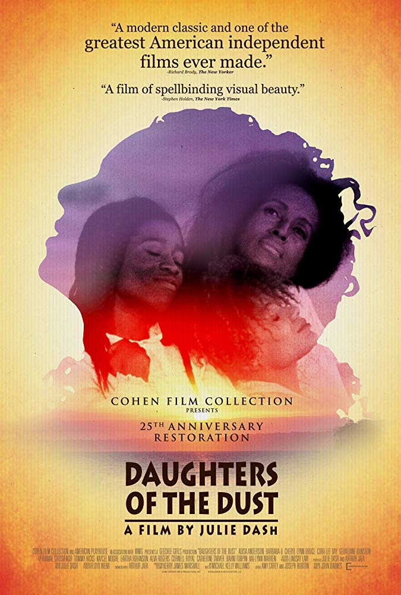
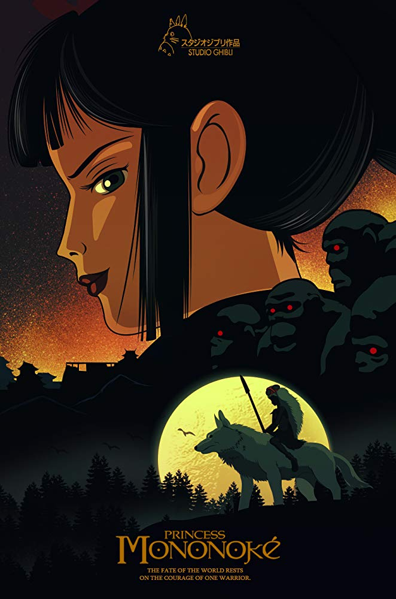

Season 54 (2019-2020)
-
 September 8, 2019Directed by Sergei M. Eisenstein; Starring Aleksandr Antonov, Vladimir Barskiy, Grigoriy Aleksandrov, Ivan Bobrov
September 8, 2019Directed by Sergei M. Eisenstein; Starring Aleksandr Antonov, Vladimir Barskiy, Grigoriy Aleksandrov, Ivan Bobrov
Battleship Potemkin (in memory of Jerry Folden)
(in memory of Jerry Folden)
Soviet Union, 1925, 66 min, B&W, Not Rated, Silent w/intertitles
In 1905 the crew of the Russian battleship Potemkin were fed up with their maggot-ridden meat rations and decided it was time to rise up against their officers. After overtaking their ship and pulling into Odessa, word of their rebellion spread and ignited a revolutionary spirit. Soon the Czar sent his troops to quell the uprising and many protesters and innocents alike were slaughtered. This exhilarating film was shot in black and white with stunning use of montage. The scenes of the uprising are rousing and incredible. The Odessa staircase scene, where a baby carriage with baby in tow glides slowly down the stairs, is one of the most famous.
Film Notes (Andrea Mensch): There are certain works of art that those of us who would like to be culturally literate need to be familiar with and there are certain names that educated people pride themselves on recognizing as great artistic innovators. (Beethoven, Michelangelo, and Shakespeare come to mind.) The name Sergei Eisenstein would be an example of this in the world of film. Much has been written about the importance of Eisenstein's oeuvre (both theoretical and cinematic) in the development of the medium of film, and yet, how many self-proclaimed film lovers in 2019 have actually seen his most famous film, Battleship Potemkin (1925)? The Cinema, Inc. is happy to provide you with an opportunity to do so at the beginning of our 2019-20 season for a variety of reasons.
First, there is the personal: One of our most steadfast, enthusiastic, and beloved board members, Jerry Folden, passed away last year. Over the decades that Jerry was a member of The Cinema, Inc.'s board, it became clear to anyone who knew Jerry that Potemkin was his favorite film. We are therefore happy to choose this film as an homage to Jerry's exquisite sensibilities. And then, there are myriad other reasons that this is an opportune time to show this film. We live in an age where complexity and nuance are increasingly dismissed, particularly when it comes to politics. One can see why literal-minded people might simply see Potemkin as early Marxist propaganda, but a closer look at the film and its history reveals that it is much more than that. Yes, it's true that Eisenstein was a relatively young idealistic Marxist when he directed the film and he believed in the ultimately humanistic goals of the Russian Revolution. (We know that he would later be bitterly disillusioned by the ways in which the Stalinist regime corrupted those ideals.) But the film transcends its immediate political goals because of Eisenstein's understanding of the potential of cinematic language as a tool for enlightenment.
Like many of his intellectual contemporaries, young Sergei embraced a dialectical way of looking at the world. He understood the seductive power of Hollywood imagery (he deeply admired the work of D. W. Griffith, for example), but he also wanted to promote a more critical way of seeing. He came up with his theories of montage to accomplish this and Potemkin is perhaps the clearest example of that kind of film-making. Eisenstein dispenses with the invisible kind of continuity editing practiced by Griffith and encourages us to be aware of how scenes are put together to make us think beyond the surface of the story. He was also wary of the idea of the "larger than life" movie star and felt that the best way to capture the concerns of ordinary people was to cast those very people in his films. While few of the characters in the film are named, the use of close-ups at key moments and the juxtaposition of intense facial expressions with their larger context can still move us deeply. The so-called Odessa steps sequence is perhaps the most famous example of this. When the czarist regime tries to quell the early signs of revolution by essentially massacring innocent civilians, we are not overwhelmed with gory scenes of blood and guts, but we are moved to feel compassion and then outrage at the injustice through the use of montage. Not surprisingly, many filmmakers from Alfred Hitchcock to Brian de Palma learned from the example of this scene and there are many instances where younger directors would visually quote from Battleship Potemkin.
There are, indeed, several ways in which a 94-year-old film about a mutiny on a Russian battleship and its subsequent effects on the people of Odessa can be relevant to Raleigh in 2019. We can marvel at Eisenstein's artistic ingenuity, we can learn something about history from this fictional recreation of an actual historical event, and we can perhaps get a glimpse of hope for our times when we witness the film's inspirational ending.Read Roger Ebert's review of Battleship Potemkin at Great Movies. -
 October 13, 2019Directed by Duncan Jones; Starring Sam Rockwell, Kevin Spacey, Dominique McElligott
October 13, 2019Directed by Duncan Jones; Starring Sam Rockwell, Kevin Spacey, Dominique McElligott
Moon
UK/USA, 2009, 97 min, Color, R
Sam Rockwell stars as Sam Bell, working a three-year shift by himself on the moon and supervising a new kind of energy mining to boost the depleted reserves of resources on Earth. His only companion is a robot called GERTY (voiced by Spacey) who manages the base and looks after Sam's every need. Sam's shift is nearly over and recently he has been going stir crazy. Distracted, he crashes his moon rover and wakes up later in sick bay. He has orders not to go outside, but does so anyway. He finds GERTY exhibiting strange behavior and the environment is not quite what it appears to be. The film is tantalizing as it draws us in and then pushes us away.
Film Notes (Dick Wayne): Moon is not a movie for action/adventure junkies. This film plays out not only in your mind, but in your heart as well.
The film stars Sam Rockwell and is basically a one-person show. However, the film also stars Kevin Spacey as the voice of the moon-based computer GERTY. We immediately learn that earth has suffered overpopulation, poverty, and disease, and that a company called Lunar Industries has solved these problems with the discovery of a source of energy on the surface of the moon.
The mining operations are conducted by just one person on the moon. Sam Bell (Sam Rockwell) is on the last couple of weeks of his three-year contract. He's looking forward to getting home to his wife and 3-year-old daughter.
Unfortunately, Sam's job is steeped in loneliness. A satellite is broken so he cannot receive live communication. Additionally, Sam has been noticing that his mind has been wandering and he has been hallucinating. The exchange between Sam and GERTY is reminiscent of 2001: A Space Odyssey, leaving one to wonder which one of the two is losing it.
Sam is not an astronaut in the traditional sense. His work is not scientific exploration. He is employed by an energy company whose motive is financial profit. What this means for Sam is a key to the story. The mood and pacing are calibrated to create a sense of growing paranoia, while retaining a sense of humor. -
 November 10, 2019Directed by Jûzô Itami; Starring Ken Watanabe, Tsutomu Yamazaki, Nobuko Miyamoto
November 10, 2019Directed by Jûzô Itami; Starring Ken Watanabe, Tsutomu Yamazaki, Nobuko Miyamoto
Tampopo
Japan, 1985, 114 min, Color, Not Rated, Japanese w/subtitles
Few movies did more to introduce Westerners to contemporary Japan and its sense of humor than this culinary comedy. It is a series of meditations on food - many short sketch-like pieces lasting but a few minutes. For example, an etiquette teacher teaches her students how to eat Italian pasta, which they want to slurp in the Japanese manner. A gangster has kinky sex with his girlfriend using crazy food items as aphrodisiacs. The main vignette is the story of pixieish Tampopo, a middle-aged single mother and owner of a failing ramen shop. A truck driver, Goro, and his buddy Gun offer to help Tampopo perfect her recipe and turn the shop into a thriving business.
Film Notes (Dick Wayne): Tampopo is a quirkily funny film that's playfully written and directed. It hops around from the main story to one scene after another. You could describe it as a bowl of ramen with lots of extra ingredients.
The core of the film shows truck drivers Goro and Gun heading into a ramen shop late one rainy night. They are unimpressed with the ramen but Goro is fascinated by the attractive owner Tampopo (Nobuko Miyamoto).
Tampopo asks Goro for help to improve her cooking and bring new life to the shop she inherited from her husband when he died. Although Goro knows his noodles from years on the road, he fears he can't do it alone so he enlists the help of Gun and several other quirky characters he knows in the city.
Alongside this story are short scenes/skits surrounding people's love of food and how it plays a part in their lives. Another aspect of the film is its depiction of food. People talk about "food porn" regarding TV cooking shows along with food images on Instagram and Pinterest. You'll probably find it hard watching this film without getting hungry.
The story explores the many aspects of food's connection to our lives. That includes sexual desire to the correct way to eat spaghetti. All in all it's a wonderful joyous and unique celebration of food and its important place in our lives. -
 December 8, 2019Directed by Yasujirô Ozu; Starring Keiji Sada, Yoshiko Kuga, Chishû Ryû
December 8, 2019Directed by Yasujirô Ozu; Starring Keiji Sada, Yoshiko Kuga, Chishû Ryû
Good Morning (Ohayô)
Japan, 1959, 94 min, Color, Not Rated, Japanese w/subtitles
The film concerns a small community of families in Japan, where the neighbors all know each other and are involved in each other's business. One family has two young sons who berate their father for his daily "small talk" about the weather, etc., believing it's phony talk. They want a TV so they can watch sumo wrestling. The father refuses, so the boys take a vow of silence until they get the TV. The director, Okzu, uses the fabric of the community and the neighbors as grist for his story, highlighting the importance of language and communication. The boys' refusal to observe the social niceties sets off a chain reaction in their tiny neighborhood.
Film Notes (Mark Van Hook): The phrase "kids say the darnedest things" has long served as a funny and familiar reference point for parents of young children, one that has spawned multiple versions of a TV show and who-knows-how-many YouTube videos in which kids do, in fact, say the darnedest things. But it hides a deeper truth that's easily missed: "kids say the darnedest things" is funny because kids simply say whatever is on their minds. Adults almost never do.
It's this premise that the great Japanese director Yasujirô Ozu sought to explore in this month's film, Good Morning (original title: Ohayô). Working with frequent screenwriting collaborator Kôgo Noda, Ozu used a disarmingly simple premise (as always) to probe the complexities and peculiarities of how adults in 1950s suburban Japan experienced (for lack of a better phrase) a failure to communicate. In doing so, he created a film that reveals profound insights about the desire for human connection and how, as adults, we build walls – mainly through language – to guard ourselves against it. With fart jokes.
Good Morning is one of Ozu's lightest and most charming pictures, a far cry at first glance from the weightier themes of world-renowned classics Late Spring (1949) and Tokyo Story (1953). But it's no less thoughtful than either of those masterpieces. It centers on two young boys, Minoru and Isamu, who become obsessed with television and demand their parents buy them a set. When the parents refuse, they take a vow of silence, and hilarity ensues.
This all sounds like the stuff of so many TV sitcoms, and perhaps it is, but handled with Ozu's deft touch it becomes something greater. The film's themes around communication and the things we don't say are universal and viewers discovering it for the first time are sure to find something relatable in it.
If not, well, fart jokes are always funny. -
January 12, 2020Directed by Terry Gilliam, Terry Jones; Starring Graham Chapman, John Cleese, Eric Idle, Terry Gilliam, Terry Jones, Michael Palin
Monty Python and the Holy Grail
UK, 1975, 91 min, Color, PG
With the team assembled, King Arthur and his Round Table embark on a journey to, well, they really have nowhere to go and nothing to do when God suddenly tasks them with locating the Holy Grail. The entire movie is little more than a series of over-the-top misadventures. It's a cornucopia of sheer off-the-wall entertainment, of memorable one-liners, unforgettable characters, zany situations, and uproarious skits. The cast and crew of this film have found the perfect balance between absurdity as part of the plot and absurdity introduced just for the sake of absurdity.
Film Notes (Jenni Elion): "What… is your name?" I am Jenni of The Cinema, Inc. Board.
Even before the opening credits shift to all things moose, you know you are in for something completely different. Monty Python and the Holy Grail toys with the moviegoer's willing suspension of disbelief by mocking Foley effects, breaking the fourth wall, and bouncing both across time and between viewpoints. It flips standard tropes – a brave knight errant rescues a prince in distress who does not want to be forced into marriage (even though the intended bride is blessed with "huge… tracts of land" – nudge nudge wink wink).
I grew up in a household where the absurd humor of Monty Python was part of the fabric of our lives. My parents let us watch the episodes on PBS and my older brother and I would launch into our favorite sketches often. For years I had a plush penguin on my television set. (He was retired to a stereo speaker when we got a flat screen and he could no longer safely perch. But he is still very near the television.) Ability to recognize and appreciate Pythonesque humor was a litmus test for potential friends.
"What… is your quest?" I seek films that will educate and entertain our subscribers.
I saw this movie when it was first released – and I was still a tween. Many of the scenes, like the comedy show's sketches, were quickly committed to memory. It wasn't until college that I developed a true appreciation for the genius of Monty Python. Virginia Tech was on the quarter system at the time, and there were several movie theaters within walking distance of campus. They each offered late shows on Fridays and Saturdays. And Monty Python and the Holy Grail was a late-show staple, offered at least once a quarter at one of the three theaters. I had seen it more than a dozen times before I graduated. By then I was more familiar with the characters and mythos of Camelot. Sex jokes that had flown, like an unladen swallow, over my head at age ten made sense. Thanks to years of singing sacred music in Latin, I finally understood the monks' chant at the beginning, as villagers bring out their dead. And now, with our country in political turmoil, I ponder whether watery tarts distributing swords might be a more responsible system of government than our current federal republic. The many catchphrases and quotes of this movie make their way into my conversations on a regular basis. I took advantage of several opportunities to post on social media "A møøse ønce bït my sïster. No reallï!" (And of course people responded "Møøse bïtes can be prettï nastï!")
There is something polarizing about Monty Python – people either find the absurd humor hilarious or they don't like it at all. I have worked in engineering and technology since Virginia Tech saw fit to bestow my degree decades ago, and I cannot explain the almost complete overlap of people in STEM careers who also appreciate Monty Python. Many of my coworkers can recite the same sketches, and immediately recognize the source material. There is a joke that if you want to hire a good programmer, forget skills-based questions. Lob Monty Python quotes at the candidates and see how they respond. Bonus points if they fake a British accent.
"What… is your favorite cookie?" Oreos! No, Thin Mints – auuugh!
Holy Grail has earned its place in the pantheon of popular culture. The movie was adapted into the Broadway musical Monty Python's Spamalot, which was nominated for a dozen Tony Awards in 2005 and won three, including Best Musical. (Raleigh's own Clay Aiken played Sir Robin when the national tour came to Memorial Auditorium in 2008.) There is a wonderful mash-up video on YouTube (click here) syncing clips from original Star Trek episodes to the movie's song about Camelot. And lately Facebook is filling my news feed with ads for a tee-shirt illustrating the forces of lift, gravity, thrust, and drag on a coconut-laden swallow. I wonder though - is that swallow African or European? -
February 16, 2020Directed by W.S. Van Dyke; Starring William Powell, Myrna Loy, Maureen O'Sullivan, Nat Pendleton
The Thin Man
(Members' Choice!)
USA, 1934, 91 min, B&W, Not Rated
Nora: You know, that sounds like an interesting case. Why don't you take it?
Nick: I haven't the time. I'm much too busy seeing that you don't lose any of the money I married you for.
The charm of this film is the dialogue between Nick and Nora. Based on Dashiell Hammett's novel, the movie operates from an irresistible premise: sophisticated hard-drinking private eye Nick Charles (Powell) has married wealthy socialite Nora (Loy). Though from two different worlds they get along famously and Nora jumps at the chance to accompany Nick when he is asked to help with an investigation.
Film Notes (Karen Bender): The Thin Man is based on a 1934 novel by Dashiell Hammett. Hammett was the writer of popular detective novels featuring hard-boiled detectives and dangerous dames. Hammett is the creator of Sam Spade (The Maltese Falcon), a detective of the hard-boiled variety, and of the delightful Nick and Nora Charles, the husband-and-wife team from The Thin Man.
Here's the set up: Nick Charles, a retired homicide detective, returns to New York after a four-year absence during which time he wooed and married Nora, a beautiful, charming, and quite rich woman from California. Besides having the hots for each other, Nick and Nora never met a martini that they didn't like. The Thin Man was released the year after Prohibition was repealed, which may explain why Nick and Nora both seem to exist in a slight to moderately inebriated state through most of the movie. During the course of the film, they also solve a murder mystery while exchanging hilarious banter and repartee. The staid detective story formula is hereby thrown on its ear by this sexy, funny, and charming married couple.
Upon Nick's return to the Big Apple, he is surrounded by a group of eccentric, colorful characters, most of whom are crooks of one sort or other that Nick arrested during his policing years. Nick is given a warm welcome by this band of misfits until Nick is drawn into a mystery by his wife Nora, who cajoles him into getting involved in the case because she never got to see him in action. In reality, Nora is seeking a little excitement and she soon proves to be a capable detective herself.
The case is solved after much hilarity and double-entendre and yes, there is a scene in a drawing-room where Nick eliminates suspects, much as you would see in an Agatha Christie novel. But with much more booze.
Nick and Nora Charles are portrayed by William Powell and Myrna Loy. Powell and Loy's on-screen chemistry is nearly palpable, and they repeated their roles in five other Thin Man films and nine more films outside of The Thin Man franchise. Hammett allegedly based the character of Nora upon his long-term partner Lillian Hellman, drawing upon their real-life relationship for the frothy, boozy banter we see between Nick and Nora.
Not to be forgotten is Nick and Nora's wonderful dog, Asta, who is portrayed by a Wire Fox Terrier named Skippy. Skippy became hugely famous playing Asta, who was a critical part of the plot in The Thin Man series, and he acted in a number of first-rate films between 1932 and 1947. You may have seen Skippy in The Awful Truth (1937) with Cary Grant and Irene Dunne, where he plays a dog named Mr. Smith, and he was also in Bringing Up Baby (1938) with Cary Grant and Katherine Hepburn, where he appears as a dog named George. One of Skippy's trainers was Rudd Weatherwax, who went on to train Lassie.Read Roger Ebert's review of The Thin Man at Great Movies. -
 March 8, 2020Directed by Jacques Tati; Starring Jacques Tati, Barbara Dennek, Rita Maiden
March 8, 2020Directed by Jacques Tati; Starring Jacques Tati, Barbara Dennek, Rita Maiden
Playtime
France, 1967, 115 min, Color, Not Rated, French w/subtitles
Tati spent years and tons of money building "Tativille", a huge glass-and-steel movie set comprising a modern-day airport, office building, and restaurant. It was as inhuman as possible, clashing in every way with human nature. Tati filled his set with a group of gaggling American tourists, the loping Hulot (Jacques Tati), and a host of other bizarre characters. The film has a chaotic feel; unpredictable like life. Nearly every joke has to do with the clash between man and modern living, and there are plenty. In the restaurant scene, things really get crazy when a wild party continues until dawn. The miraculous ending leaves you smiling about the way we humans have of demolishing order wherever we go.
Film Notes (Pete Corson): If you want to know about Playtime you need to know about its remarkable director, Jacques Tati. Where did John Cleese of Monty Python get his inspiration for the Ministry of Silly Walks? Jacques Tati's character Mr. Hulot, who repeatedly appeared in Tati's films.
Jacques Tati was born Jacques Tatischeff on October 9, 1907, in Le Pecq, France. His early adulthood included national military service, a stint as an apprentice picture framer in his father's business, and playing on a rugby sports team. During these years he discovered his ability to entertain people with his comedic talents. He tried being a standup comic, but eventually he gravitated to filmmaking.
His entrance to filmmaking was as an actor in bit parts. However, in 1946 he and a friend founded Cady-Films, which began producing the films for which he is known. By then his character, Mr. Hulot, was well-developed from his stage work. The raincoat, umbrella, and pipe were to become part of his iconic image, and his awkward and inept social behavior probably was the model for Inspector Clouzot of Blake Edwards' Pink Panther series.
When his third feature-length film, Mr. Hulot's Holiday, came out in 1953, we discovered that his comedy did not need conversation! There is no dialogue until briefly near the end. That film is a series of vignettes on people's behavior and their foibles. The Cinema, Inc. has shown most of Tati's films over our years because they are so original.
So, we come to Playtime, released in 1967. We find the same themes of his previous films: society's obsession with material goods, the superficiality of relationships among France's various social classes, the pressures of work and schedules, and the cold, almost robotic, feeling of the modern buildings and environment. Once again, the film is a series of episodes illuminating the human condition, with little storyline.
Tati built on the outskirts of Paris a mini-city of glass and steel to represent the sterile environment of modern society for his film. It became nicknamed Tativille and took him almost a decade to build. He utilized every financial resource he could find in order to create his film. And yes, it ultimately bankrupted him. But the end result is a film like no other and is the peak of his filmmaking.
He made several other feature-length films before his death in 1982, but Playtime is considered the pinnacle of his worldview. To view it, be prepared for a film that is about people, not a story line like we expect today. Allow it to unfold at its own pace. His nostalgia for a Paris that used to be warm in friendships and stable neighborhoods is shown through his portrayal of the clinical coldness of modern society. He is unique in his vision.Read Roger Ebert's review of Playtime at Great Movies. -

April 12, 2020Directed by Julie Dash; Starring Cora Lee Day, Alva Rogers, Barbarao
Daughters of the Dust
UK/USA, 1991, 112 min, Color, PG
This is the first feature-length film helmed by an African-American woman. It is an impeccably rich view of Gullah Islanders, a culture that few "outsiders" have ever known. Saint Helena island is off the coast of South Carolina where slaves, divorced from mainland influences, formed their own culture, and passed it down to their descendants once slavery was abolished. Over time the men and women of the community decide whether to leave the island or stay. Their stories are told through the West African-derived language as well as through a vocabulary of physical gestures.
-
 May 10, 2020Directed by Stanley Donen; Starring Audrey Hepburn, Albert Finney, Eleanor Bron
May 10, 2020Directed by Stanley Donen; Starring Audrey Hepburn, Albert Finney, Eleanor Bron
Two for the Road
UK, 1967, 111 min, Color, Not Rated
This film is one of the most insightful films about the institution of marriage. It doesn't shy away from complex emotions, both in joy and sorrow. The film takes place over five distinct time periods, each chronologically depicting a trip through the French countryside at different times in a couple's lives. The story lines cleverly interweave as cars and hair styles from different periods cut between past and future selves. The strength of the film is that it avoids easy answers and gives the characters room to talk out their problems. They don't reach solutions, but find compromise. Isn't that what relationships boil down to?
-
June 14, 2020Directed by Bernardo Bertolucci; Starring John Lone, Joan Chen, Peter O'Toole
The Last Emperor
UK, 1987, 163 min, Color, PG-13, English; Mandarin and Japanese w/subtitles
The winner of nine Academy Awards, including Best Picture, this is a stunning example of a historical movie of outstanding quality. Director Bertolucci has created an intensely personal movie, humanizing a culture with a depiction of a man at its center. From the age of 3 in 1908, when he is crowned emperor of China, Pu Yi lives through the vastly changing world of twentieth-century China. Political events in his teen years force him to live in the Forbidden City where he has the same pampered life with no real power. The film follows Pu Yi, his supporters, his betrayers, his lovers, and his own growing conscience as his personal story reveals the story of China.
-
July 12, 2020Directed by Edward Yang; Starring Chen Chang, Lisa Yang, Kuo-Chu Chang
A Brighter Summer Day (Gu ling jie shao nian sha ren shi jian)
Taiwan, 1991, 237 min*, Color, Not Rated, Mandarin/Shanghainese w/subtitles
* Please note this film has a running time of just under four hours.
Set over the course of most of a year in 1961, the film deals with a subculture of mainland Chinese who fled to Taiwan after the victory of the Chinese Communists in 1949. Their children are now living in a state of uncertainty and have taken to forming street gangs for a sense of safety and control. There are many subplots, but the main thrust of the story has to do with a gangster's school-age girlfriend. He has gone into hiding, but has been warned never to let a girl become the cause of bad blood. The arc of the movie conveys dislocation, people adrift between patriotism, Taiwanese traditions or something more elusive. The children seem to understand all this, but can't comprehend how to crawl out from under it.
-

August 9, 2020Directed by Hayao Miyazaki; Starring Yôji Matsuda, Yuriko Ishida, Yûko Tanaka
Princess Mononoke (Mononoke-hime)
Japan, 1997, 134 min, Animated, PG-13, English (dubbed)
Inflicted with a deadly curse, a young warrior, Ashitaka, sets out in search of a cure. He becomes entangled in a battle that matches a clan of humans against animal gods. Among them is Princess Mononoke, who was raised by wolves. This haunting, beautifully-animated, acclaimed fantasy epic is a sophisticated story of clashing cultures in an era of environmental recession and industrial expansion. Miyazaki takes a hard look at humanity's desire to consume and its history of destroying to create, and asks if there isn't a balance worth striking between the natural and the technological.